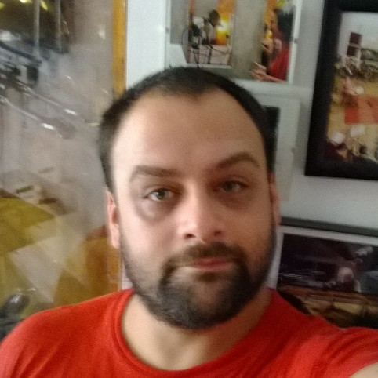

Javier Latorre
Desarrollador Frontend

Hola
Soy Javier Latorre un apasionado de la tecnología, trabajador y con experiencia en alrededor de 10 países como desarrollador de páginas web .
Contato
Teléfono:
+54 011 5555-6666
Email:
un_mail@mydomain.com
Dirección:
Calleunica, 567
Buenos Aires, Argentina
C1734XCS
Acerca de mi
Me considero una persona tolerante y respetuosa con mente abierta y honesta. Me gusta mucho escuchar, conocer a las personas y sus diferentes experiencias.
Me dedico hace 10 años al desarrollo frontend de diferentes proyectos en todo el mundo. He trabajado para compañias de Estados Unidos, Mexico, Canada, España, etc.
Experiencia laboral
Desarrollador web
Tupaca. 2022 - Actualidad
- Desarrollo de landing pages comerciales
- Implementacion de mejoras a proyectos existentes
- Seguimiento de errores
- Maquetación
- Reporte de fallas
Asistente area comercial y Marketing
Zurich. 2019 - 2021
- Asesoramiento Comercial
- Manejo de CRM, RRSS y Tienda Nube
- Ampliado de base de datos
- Fidelización de clientes
- Propuestas comerciales
Marketing digital
Centro Pet Argentina SRL. 2013 - 2019
- Sesiones fotográficas
- Manejo de SSRR y Tienda Nube
- Proyeccion de objetivos comerciales
- Manejo de Google Analytics
- Armado de vidrieras
Habilidades
- Pragmatismo
- Honestidad
- Respeto
- Habilidades docentes
- proactividad
Intereses y hobbies
- Viajar
- Música
- Literatura
- Teatro